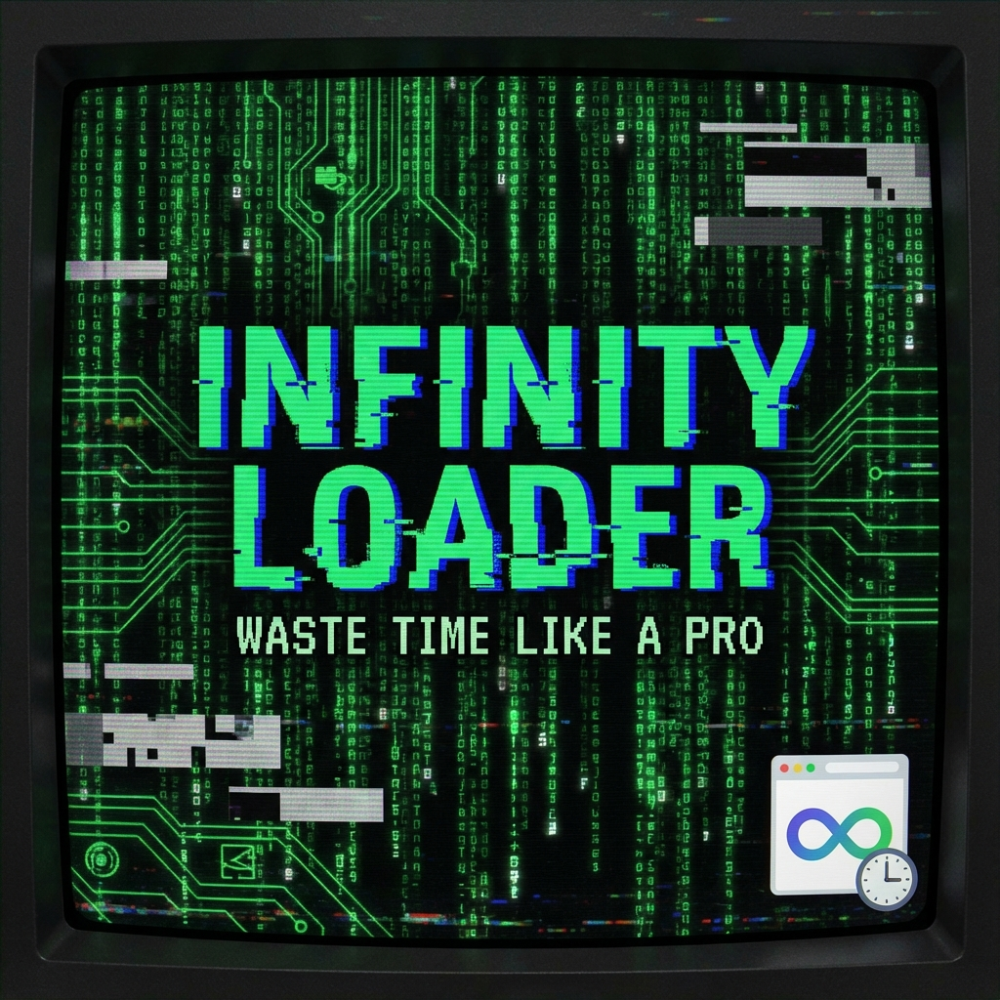

Endless installations, unstoppable progress bars.
Make your screen look "busy" forever.
終わらないインストール、止まらないプログレスバー。
あなたの画面を常に「忙しそう」に見せかけます。
Add to Chrome
Chromeに追加
What is this?
これは何？
"Infinity Loader" is a joke extension that displays an infinitely running fake installation screen.
Perfect for when your boss walks by, when you want to impress friends with "hacking", or just want to watch
green text flow.
「Infinity
Loader」は、無限に続くフェイクのインストール画面を表示するジョーク拡張機能です。上司が後ろを通るとき、友人に「ハッキングしてるの？」と言わせたいとき、あるいは単に緑色の文字が流れるのを眺めていたいときに最適です。
Key Features (Useless Features)
主な機能 (無駄機能)
- Realistic Fake Logs: Generates plausible commands like `npm install`, `docker pull`,
`mining crypto` endlessly.
- Doors OS: Pretends to run on the non-existent parody OS "Doors OS".
- Typing Animation: Commands are typed out character by character. Skip with `Alt+T`.
- Crash Simulation: Occasional kernel panics and errors that auto-recover. Adds tension.
- User Input: You can actually type commands (nothing happens, but it's logged).
- リアルなフェイクログ: `npm install`, `docker pull`, `mining crypto` など、それっぽいコマンドが無限に生成されます。
- Doors OS搭載: 実際には存在しないパロディOS「Doors OS」上で動作するフリをします。
- タイピング演出: コマンドが一文字ずつタイプされるアニメーション。`Alt+T`でスキップも可能。
- クラッシュシミュレーション: 時々カーネルパニックやエラーが発生し、自動で復旧します。緊迫感を演出。
- ユーザー入力: 実際にコマンドを打てます（何も起きませんが、ログには残ります）。
* This is a live demo. It is actually
running.
※ 上記はライブデモです。実際に動いています。
How to use
使い方
- Click the icon to open a new tab.
- Watch the screen.
- When someone walks by, look serious and say "The build is taking forever...".
- Press `Space` to pause, `Esc` for interruption effect.
- アイコンをクリックして新しいタブを開きます。
- 画面を眺めます。
- 誰かが来たら、難しい顔をして「ビルドが長引いてて...」と言い訳します。
- `Space`キーで一時停止、`Esc`キーで中断演出も可能です。
* This is a joke app. No actual installation or hacking occurs.
* It (probably) won't affect
PC performance.
※ この拡張機能はジョークアプリです。実際のインストールやハッキングは行われません。
※ PCのパフォーマンスには（多分）影響しません。
Waste Time Now
今すぐ無駄な時間を過ごす